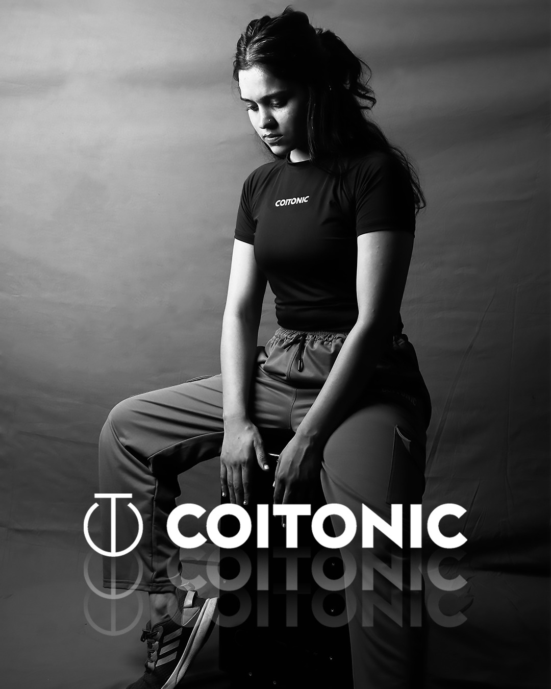

Selected Archive
GRAIN BOX / OCEANGrain Box
CREATIVE STUDIO
FILM · MUSIC VIDEO · BRAND,
OCEAN EDIT / OCEAN MUSIC,
POST & CINEMATOGRAPHY

Grain Box is a cinematic creative studio working across short film, music video, and brand campaigns. The work favors raw human frames — festival shorts, studio athletics, beauty product films, and music visuals shaped with Ocean Edit / Ocean Music.
Recent film work includes A Little Space We All Need (Pratibha Production) — Honorable Mention at Film That Move Jamaica 2025 and Official Selection at the Indian Independent Film Festival and Amader International Short Film Festival — and The Last Yug with Himalayan Oracle Films, where cinematography and DI/VFX sit with Samir Patel and Sagar Unagar.
Music video credits span Highover (BAWA BELT), Tere Siva (Ocean Music — Sagar Unagar & Payal Tailor), and Adhura Muqadma (Ocean), alongside commercial campaigns for COITONIC athletics and Infinium Tecginics skincare.
Selected collaborators and houses include
Pratibha Production, Himalayan Oracle Films, Ocean Music, Ocean Edit, Elysian, BAWA BELT / Mafia Origins, COITONIC, and Infinium Tecginics.
Watch the Showreel 2026 and project cuts on YouTube and Instagram — click any Work card to open the linked piece.
Let's work together
support.grainbox@gmail.comFilm, music video & brand work — Grain Box / Ocean.